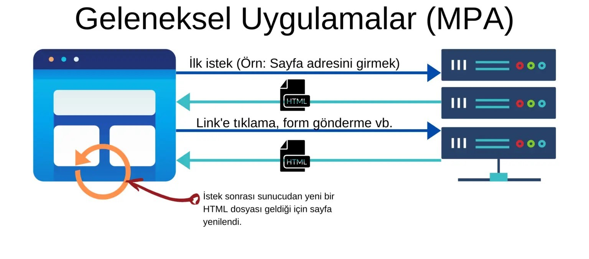

Mpa yani klasik web siteleri , istemci (client), sunucudan (server) ulaşmak istediği sayfayı talep eder, sunucu da bu sayfayı istemci ile paylaşır. Bu işlem her sayfa için tekrar tekrar gerçekleştirilir. Mesela bir siteye girdiğinizde önce ana sayfa sunucudan istenir, sonra kullanıcı diğer bir sayfaya geçtiğinde, mesela iletişim sayfası diyelim, istemci tekrar bu sayfayı sunucudan ister. Klasik web siteleri bu şekilde çalışmaktadır.
